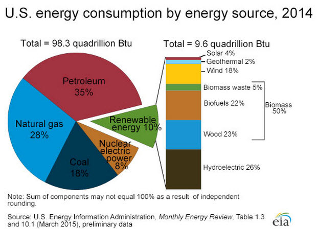
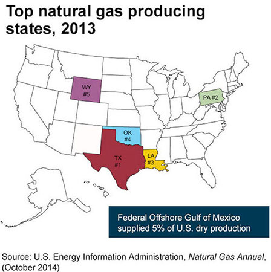

- How much of the natural gas produced in the United States during the first half of 2015 came from U.S. shale basins?
- 32%
- 43%
- 56%
- 68%
- How much of U.S. energy consumption was from renewable energy sources in 2014?
- 5%
- 10%
- 20%
- 30%
The answer is 10%.
Renewable sources of energy supplied about 10% of total U.S. energy consumption in 2014.

Learn more:
- How many gallons of gasoline are refined from one barrel of crude oil?
- 19
- 22
- 33
- 42
The answer is 19.
U.S. refineries produce an average of about 19 gallons of finished motor gasoline and 26 gallons of other petroleum products from one 42-gallon barrel of crude oil. How can one 42-gallon barrel of crude oil yield 45 gallons of petroleum products? The increase in volume is because of refinery processing gain.
Learn more:
- About what percent of U.S. electricity was generated from nuclear power in 2014?
- 5%
- 10%
- 15%
- 20%
Answer is about 20%.
In 2014, nuclear power plants provided 19% of the electricity generated in the United States.
Learn more:
- Which U.S. state produced the most natural gas in 2013?
- Alaska
- Texas
- Pennsylvania
- Oklahoma
The answer is Texas.
Texas was the largest natural gas-producing state in 2013.

Learn more:
- How much of U.S. electricity generation came from renewable energy sources in 2014?
- 13%
- 26%
- 42%
- 55%
The answer is 13%.
About 13% of U.S. electricity was generated from renewable energy sources in 2014.
Learn more:
- How much of total U.S. hydroelectricity generation was from the state of Washington in 2014?
- 48%
- 38%
- 30%
- 25%
The answer is 30%.
In 2014, approximately 30% of total U.S. hydroelectricity was generated in Washington, which is the site of the Grand Coulee Dam, the largest hydroelectricity facility in the United States.
Learn more:
- What was China's share of total world coal consumption in 2013?
- 13%
- 25%
- 38%
- 50%
The answer is 50%.
China is the largest consumer of coal in the world and accounted for half of the world's coal consumption in 2013.
Learn more:
- What percent of U.S. net petroleum imports came from Persian Gulf countries in 2014?
- 15%
- 27%
- 33%
- 45%
The answer is 27%.
In 2014, about 27% of U.S. net imports of crude oil and petroleum products were from the Persian Gulf countries of Bahrain, Iraq, Kuwait, Qatar, Saudi Arabia, and the United Arab Emirates. The United States gets the largest share of net petroleum imports from Canada.
Learn more:
- What percent of U.S. coal production in 2013 was from Wyoming?
- 15%
- 24%
- 39%
- 48%
The answer is 39%.
In 2013, 39% of total U.S. coal production was from Wyoming, the largest coal-producing state.
Learn more:
- About what percent of the petroleum consumed in the United States is used for transportation?
- 90%
- 85%
- 80%
- 70%
The answer is about 70%.
In 2014, about 71% of the petroleum consumed in the United States was used for transportation.
Learn more:
- How much did U.S. natural gas proved reserves increase from 2008 to 2013?
- 38%
- 49%
- 62%
- 70%
The answer is 38%.
As of December 31, 2013, U.S. proved reserves of dry natural gas were about 338 trillion cubic feet, an increase of about 38% over the proved reserves of about 245 trillion cubic feet of dry natural gas at the end of 2008.
Learn more:
- How many nuclear power plants are there in the United States?
- 104
- 99
- 61
- 55
The answer is 61.
As of January 1, 2015, there were 61 commercially operating nuclear power plants with 99 nuclear reactors in 30 U.S. states.
Learn more:
- What is the largest cost component of the retail price of motor gasoline in the United States?
- Taxes
- Crude oil
- Refining costs
- Distribution and marketing
The answer is crude oil.
The cost of crude oil is the largest cost component of the retail price of motor gasoline in the United States.
Learn more:
- Electricity is called a secondary energy source because...?
- it's our #2 source of energy
- it's not as important as coal, natural gas, or oil
- we get electricity by converting other energy sources
- all of the above
The answer is we get electricity by converting other energy sources into electricity.
Electricity is a called a secondary energy source because we convert primary energy sources, such as fossil fuels, renewable energy, and uranium, into electricity.
Learn more:
- In what year were crude oil prices the highest ever recorded?
- 1974
- 1981
- 2008
- 2012
The answer is 2008.
On July 3, 2008, the spot (wholesale) price for Brent crude oil (the benchmark for international crude oil prices) reached a record high of $143.95 per barrel.
Learn more:
- How much did the United States contribute to world carbon dioxide emissions related to energy consumption in 2012?
- 16%
- 23%
- 34%
- 52%
The answer is 16%.
The U.S. Energy Information Administration (EIA) estimates that the United States emitted about 5.27 billion metric tons of carbon dioxide (CO2) from the consumption of energy in 2012. This was about 16% of total world emissions of about 32.31 billion metric tons of energy-related CO2 emissions.
Learn more:
- What U.S. state was the second-largest crude oil producer in 2014?
- Alaska
- California
- Oklahoma
- North Dakota
The answer is North Dakota.
About 397 million barrels of crude oil were produced in North Dakota in 2014, making North Dakota the second-largest crude oil producer, after Texas, of the 31 states where crude oil is produced.
Learn more:
- What U.S. state has the highest electricity prices?
- California
- Hawaii
- Alaska
- Florida
The answer is Hawaii.
Electricity prices in Hawaii are, on average, higher than in any other state. In 2014, the annual average electricity price in Hawaii was 37.34 cents per kilowatthour (kWh). In comparison, the U.S. average annual electricity price in 2014 was 10.45 cents per kWh.
Learn more:
- Natural gas accounted for what share of total U.S. energy production in 2014?
- 11%
- 24%
- 31%
- 43%
The answer is 31%.
In 2014, dry natural production accounted for about 31% of total U.S. energy production. The equivalent of about 26 quadrillion British thermal units (Btu) of natural gas were produced in 2014, or about 31% of total U.S. domestic energy production of 87 quadrillion Btu.
Learn more:
{kind=link}
{kind=link}
{kind=link}